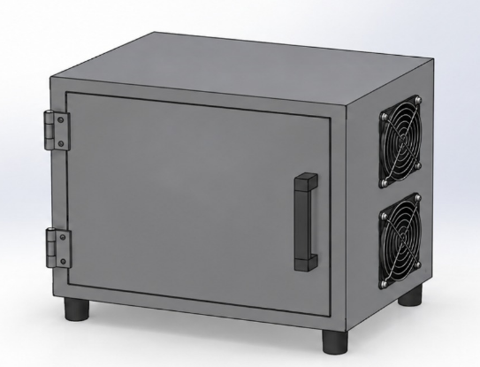

PROYECTO ACADÉMICO · TECSUP AREQUIPA · 2026
Ingeniería que
controla el calor.
Diseño e implementación de un prototipo de horno eléctrico con control PID de temperatura mediante PLC Siemens para el curado de barniz aislante en bobinados de motores eléctricos.
SYSTEM OVERVIEW H-01 / REV. PRELIMINAR
PT100 → PLC → SSR → EH-01Esquema ilustrativo · no es plano eléctrico
DISEÑO CONCEPTUAL · H-01
Así imaginamos nuestro horno eléctrico.
Este boceto muestra la propuesta inicial de la cámara térmica del prototipo, con puerta frontal y ventilación lateral. Documentaremos su evolución durante las 16 semanas del proyecto.
Explorar el diseño
DOCUMENTACIÓN ABIERTA
Del concepto a la validación.
Una bitácora organizada por semanas: decisiones, diseño, fabricación, código, pruebas y aprendizajes.
RUTA DE TRABAJO
16 semanas, 5 etapas.
Calendario planificado del 17 de agosto al 6 de diciembre de 2026.
01 — 03Definir04 — 06Diseñar07 — 09Ingeniería10 — 12Implementar y validar13 — 16Verificar y cerrar
Explora el registro semanal
Ver las 16 →SEM / 01Definir01Lluvia de ideas y elección del proyecto17/08/2026 — 23/08/2026SEM / 02Definir02Investigación y benchmarking24/08/2026 — 30/08/2026SEM / 03Definir03Funciones y concepto de solución31/08/2026 — 06/09/2026SEM / 04Diseñar04SRS y arquitectura del sistema07/09/2026 — 13/09/2026SEM / 05Diseñar05Filosofía de control y diagramas14/09/2026 — 20/09/2026SEM / 06Diseñar06Selección tecnológica y paquete de diseño21/09/2026 — 27/09/2026